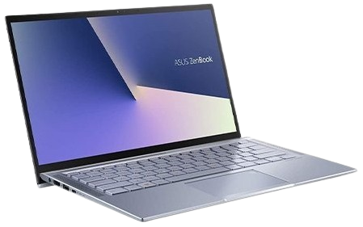
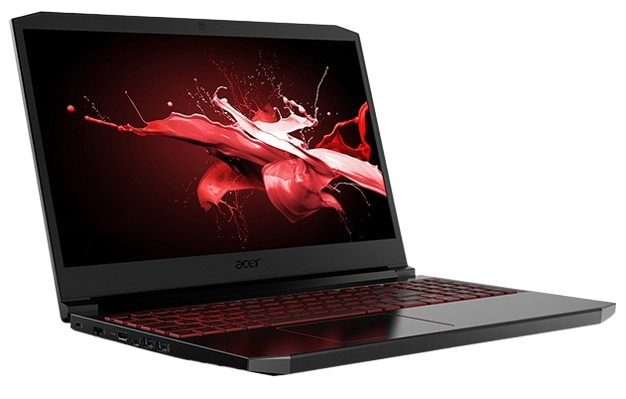

|  |
El ordenador de la izquierda, se adapta mas para el entorno de |
 |
|
El ordenador de la izquierda se centra mas en el entorno de juegos, mayor |
Hasta el momento te vamos a orientar de cual ordenador y gustos te quedarias.